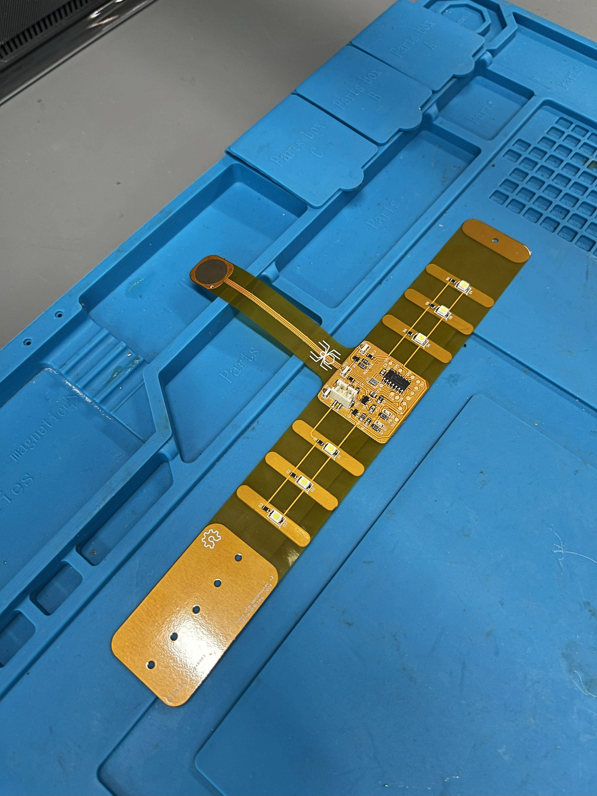
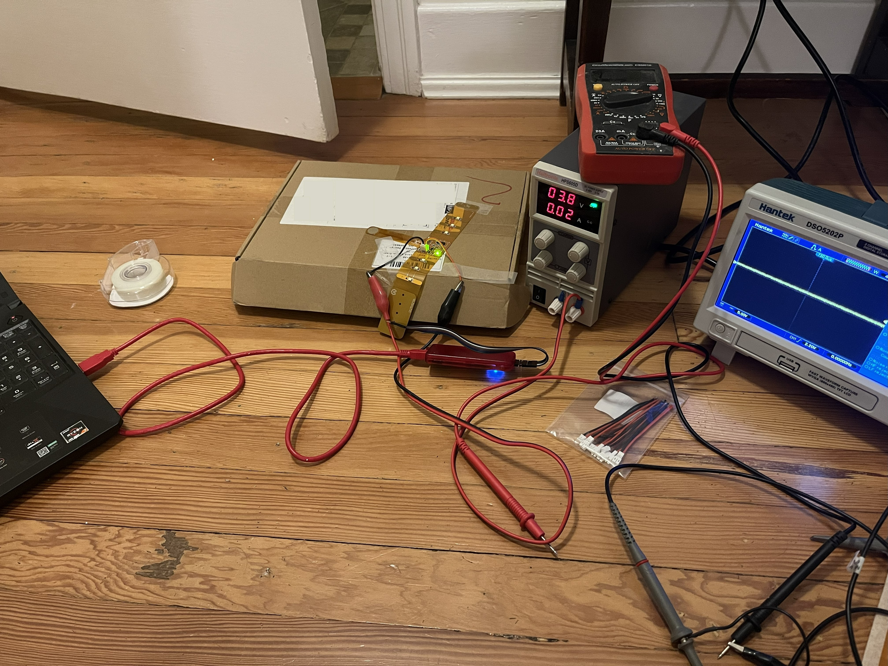
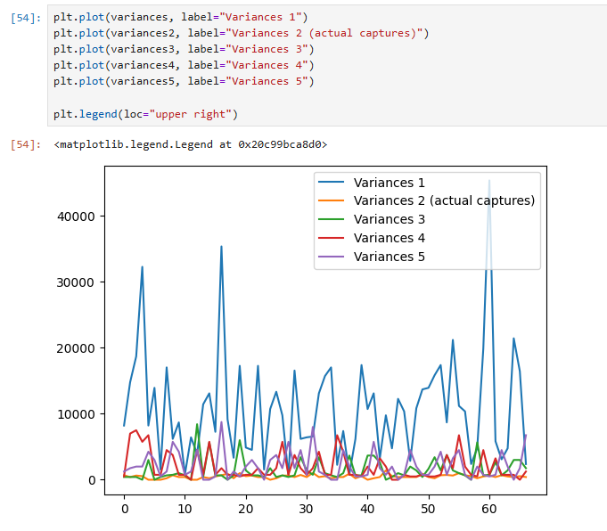

Flex PCB Webshooter
I'm excited to finally share a project I had on the backburner for a couple years, got working almost a year ago, and haven't posted until now! This is a wrist-wearable device built around a flex PCB. Its main features, which are accessed through a capacitive touch sensor that extends into the palm, are some white LEDs for illumination and an IR blaster that can send IR commands to nearby devices. It is heavily inspired by the webshooters from the Spider-Man comics and movies.
Idea and Project Concept
In June 2023, I watched Spider-Man: Across the Spider-Verse, and I absolutely loved it. I loved the characters, the animation, the story, everything about it. One of the ways that I like to engage with pop culture is by building projects based on it, so as I was walking out of the theater, I knew I had to make some kind of webshooter.
After some more thinking, I decided that I wanted to implement this project using a flex PCB, and that I wanted it to have a couple specific features. I chose LED illumination because it is relatively simple to implement, and I chose the IR blaster because it's quite a bit more interesting. I had done some experiments with receiving/transmitting IR codes previously, and it fits the formfactor of a webshooter well (because you can point your wrist at a TV and turn it off/on). I chose to interact with the device through capacitive touch sensing to be true to the comics, and because I didn't want to deal with the forces required for a pushbutton.
Here are the high-level requirements that I decided on for this project:
- Built on a flex PCB
- Interact with it through a capacitive touch sensor
- Has white LEDs for illumination
- Can send IR commands to an IR device
Hardware
The requirements for this project demanded some technologies and skills that I previously hadn't worked with:
- Flex PCB design
- Embedding a microcontroller onto a flex PCB
- Capacitive touch sensing
The main flex PCB takes the shape of a wristband with a projection coming out from it to act as the capacitive touch sensor in the palm. I added steel stiffeners behind areas where components are placed to prevent stress on the solder joints of the components (flex PCBs can easily rip at solder joints because of how thin they are). To clasp the device around your wrist, there are holes through the PCB and the stiffeners to put a pin through with a stopper on the other end (like the kind used for making enamel pins).
I chose to use a PIC microcontroller for this project, as the behaviour I wanted to implement was pretty simple and it didn't sit right with me to have a really overkill microcontroller. I specifically chose the PIC16F18425 for its capacitive touch sensing capability and its forgiving SOIC-14 package. To program the PIC without putting too much strain on the board from unplugging/plugging it in, I added 5 pads in a line for the programming signals and soldered an adapter between the PICKit3 and some pogo pins that could interface with those pads. The only downside to this is that I had to hold the adapter down on the board with one hand while stepping through code with my other hand, so maybe creating a programming jig is another task for a version 3. The system clock is driven by an 8MHz can oscillator because I didn't want to deal with tuning the drive of a crystal resonator.
The white LEDs are placed on the wristband with stiffeners behind them, and they're all driven by a single MOSFET. IR communications are done by 3 wide-beamwidth IR LEDs, also driven by a single MOSFET. The component selection and schematic design for these was taken from the Flipper Zero's schematics , as it's a proven device with the functionality I wanted, and it's open-source!
The device is powered off a single-cell LiPo battery that's simply fed through an LDO to provide a constant 3.3V for the microcontroller. I could have likely powered the microcontroller directly off the battery since PICs are relatively tolerant to varying input voltages, but I was more comfortable using an LDO and didn't want any extra risk that may have introduced. The LiPo is charged externally using an Adafruit USB-C LiPo charger.
I assembled the board by hand (placing parts manually and using a reflow oven at school) so I wasn't constrained with JLCPCB's part selection, and to save money. The layout wasn't super dense, so I could make do with 0805 passives to make that easier on myself.
Every hardware project requires at least two revisions, and this is no exception. The first revision largely worked, but I had to make some minor changes to some footprints and the capacitive touch sensor line (adding a grounded copper pour underneath the sense trace) to decrease spurious detections.

Firmware

The firmware for this project is relatively simple. It just needs to get input from a capacitive touch sensor and then either send an IR command with a single tap, or toggle the illumination LED state with a double tap. Since I'm using a PIC, the firmware is programmed using the MPLAB IDE and flashed using a PICKit3.
The capacitive touch sensor works on a capacitive voltage divider, where the sample-and-hold capacitor is charged to a known voltage, then connected to the pad so the two capacitances share charge. The resulting voltage tells you how much capacitance the pad (and whatever is touching it) adds. To implement this, I used Microchip's mTouch library. This has the fun feature of the sensor thresholds being adjusted on the fly, so it even works when you have the sensor right next to your skin (which adds a bunch of extra capacitance). If I had to do this project over again, I probably would have tried to write the capacitive sensing code on my own, for reasons discussed later. The tap logic was pretty simple: a hardware timer starts when a tap is received. If the timer runs out, an IR command is sent, and if another tap arrives first, the illumination LEDs are toggled.
IR communication was done with a couple of hardware timers: one for generating the 38kHz IR LED modulation (TMR2 via the PWM1 peripheral) and one for timing the pulse periods (TMR1). Getting the IR communication code to work was the most difficult part of the project. I was having a lot of issues with the pulse periods being longer and having more timing variance than the periods I specified (variance initially over 10 milliseconds² for some intervals!), which I initially thought were inefficiencies in my code. I did a ton of rounds of optimization, which I systematically recorded using an Arduino with IR sensor and analyzed in a Jupyter Notebook, trying things like optimizing my timer interrupt code, trying O3 optimization (which Microchip paywalls with a free trial), and pre-generating the timer reloads so I didn't have to do 16-bit math on the fly.
In the end, the solution was simply increasing my system clock rate. I was initially using the external clock input directly as the system clock, but I realized that I could boost it to a 32MHz system clock using the 4x PLL inside the microcontroller. The 38kHz modulation has a period of about 26 microseconds. At 8MHz the PIC runs at 2MIPS, so that's only about 50 instructions per modulation cycle, and even a little bit of code (or an interrupt from the mTouch library, which was adding a good bit of interrupt noise) can add timing error equal to a full modulation cycle. Increasing the system clock makes those instructions take less time, so they matter less. At 32MHz, about 200 instructions fit in one cycle, so the same stray code or interrupt barely has an effect. After adjusting all my timers so that everything worked with the faster system clock, I got the interval variance down to below 2 milliseconds² and it worked!

I learned a lot of really important lessons in the firmware portion of this project that I can apply in future projects. The biggest lesson was that you have to really understand your firmware codebase. When things start to go south and you need to debug them, you will have to have a solid understanding of what's going on to effectively debug it. Early on, I leaned a lot on MPLAB's code configurator for generating timer interrupts, which made development quick at the start but allowed me to get quite far without actually understanding how the PIC platform implements timer interrupts, so when things were breaking, I had to learn all that from scratch anyway after spending time trying to make it work through MCC. Another good example of this is the mTouch library, which while working quite well, I didn't have a good understanding of what it was doing and therefore couldn't optimize that much as described above.
I also felt like I was running up against the limitations of the PIC platform. If I did this project again, I would probably use a more powerful 32-bit platform, as these days you can get some lower-capability 32-bit microcontrollers that blow the 8-bit PIC I was using out of the water while also being cheaper. There is something to be said for writing optimized code that fits your platform very well, and I think that's an important skill that can be developed when the application demands it. For my personal projects where I'm more interested in getting something that works, I would rather give myself more performance headroom to begin with than run up against the limitations of my platform and have to spin a new revision with a new microcontroller. I was also running into some headaches with MPLAB, such as O3 optimization being paywalled and my PICKit3 being obsoleted in the newest version. I use the STM32 platform a lot in my work, and I find it a much better experience overall, which counts for a lot.
Conclusion
This was a really neat project to work on, and I learned a ton from it! The hardware portion of this project was relatively straightforward, so I gained a lot of confidence with the design risks that I took there. The firmware portion was a huge learning experience, and I learned a lot of hard lessons about hardware limitations and leaning on code you don't understand. At the end of it all, I designed, built, programmed, and debugged a really cool device that meets all my requirements perfectly. I'm really looking forward to building some more projects with the learnings gained from this project!